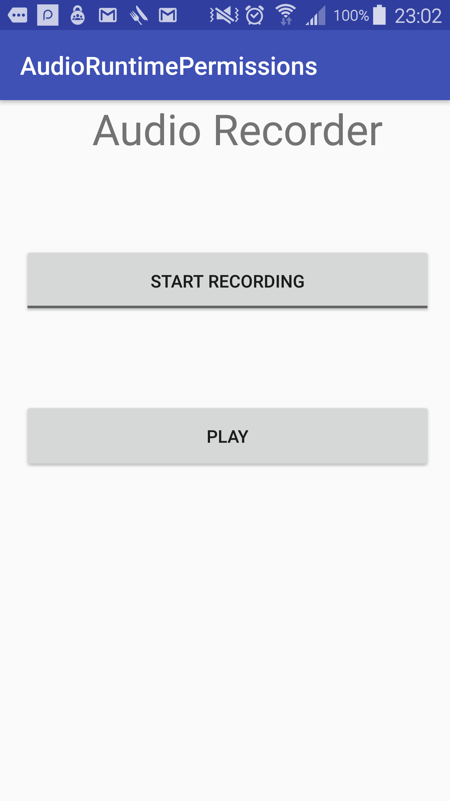

Requesting Audio permission at Runtime
Posted on June 20, 2017 in Development
Requesting Audio permission at Runtime
This recipe will show how to request run-time permissions to enable audio recording.
As you may know already that adding <uses-permission android:name="android.permission.RECORD_AUDIO" />
permission in AndroidManifest.xml is not enough on devices running Android 6.0 and greater.
This permission has to be requested dynamically at the run-time when user uses your app's
recording/mic feature for first time (in addition to declaring this permission in AndroidManifest.xml).
Sample App
This sample has two buttons: Start/Stop Recording Toggle button : Click this button to start or stop recording. Play: You can listen to recorded audio by clicking on this button.

AndroidManifest.xml
<uses-permission android:name="android.permission.RECORD_AUDIO" />
Requesting Permissions in Run time
Here's the code that's responsible for handling runtime permissions. I've added the inline comments to explain what's going on with code.
//Requesting run-time permissions
//Create placeholder for user's consent to record_audio permission.
//This will be used in handling callback
private final int MY_PERMISSIONS_RECORD_AUDIO = 1;
private void requestAudioPermissions() {
if (ContextCompat.checkSelfPermission(this,
Manifest.permission.RECORD_AUDIO)
!= PackageManager.PERMISSION_GRANTED) {
//When permission is not granted by user, show them message why this permission is needed.
if (ActivityCompat.shouldShowRequestPermissionRationale(this,
Manifest.permission.RECORD_AUDIO)) {
Toast.makeText(this, "Please grant permissions to record audio", Toast.LENGTH_LONG).show();
//Give user option to still opt-in the permissions
ActivityCompat.requestPermissions(this,
new String[]{Manifest.permission.RECORD_AUDIO},
MY_PERMISSIONS_RECORD_AUDIO);
} else {
// Show user dialog to grant permission to record audio
ActivityCompat.requestPermissions(this,
new String[]{Manifest.permission.RECORD_AUDIO},
MY_PERMISSIONS_RECORD_AUDIO);
}
}
//If permission is granted, then go ahead recording audio
else if (ContextCompat.checkSelfPermission(this,
Manifest.permission.RECORD_AUDIO)
== PackageManager.PERMISSION_GRANTED) {
//Go ahead with recording audio now
recordAudio();
}
}
//Handling callback
@Override
public void onRequestPermissionsResult(int requestCode,
String permissions[], int[] grantResults) {
switch (requestCode) {
case MY_PERMISSIONS_RECORD_AUDIO: {
if (grantResults.length > 0
&& grantResults[0] == PackageManager.PERMISSION_GRANTED) {
// permission was granted, yay!
recordAudio();
} else {
// permission denied, boo! Disable the
// functionality that depends on this permission.
Toast.makeText(this, "Permissions Denied to record audio", Toast.LENGTH_LONG).show();
}
return;
}
}
}
App shows user a permission dialog box to either allow or not the given permission.

Recording Audio
First, a file needs to be created to store audio data in it. Here's how I'm creating a file when app launches.
@Override
protected void onCreate(Bundle savedInstanceState) {
super.onCreate(savedInstanceState);
setContentView(R.layout.activity_main);
try {
mAudioFile = createAudioFile(this, "demo");
} catch (IOException e) {
e.printStackTrace();
}
}
private static File createAudioFile(Context context, String audioName) throws IOException {
File storageDir = context.getExternalFilesDir(Environment.DIRECTORY_PODCASTS);
File audio = File.createTempFile(
audioName, /* prefix */
".3gp", /* suffix */
storageDir /* directory */
);
return audio;
}
Once file is created, it can be used to store audio data in it:
private void recordAudio() {
if (mRecorder == null) {
mRecorder = new MediaRecorder();
mRecorder.setAudioSource(MediaRecorder.AudioSource.MIC);
mRecorder.setOutputFormat(MediaRecorder.OutputFormat.THREE_GPP);
mRecorder.setOutputFile(mAudioFile.getAbsolutePath());
mRecorder.setAudioEncoder(MediaRecorder.AudioEncoder.AMR_NB);
}
if (!isRecording) {
try {
mRecorder.prepare();
mRecorder.start();
isRecording = true;
} catch (IOException e) {
Log.e("Audio", "prepare() failed");
}
} else if (isRecording) {
isRecording = false;
stopRecording();
}
}
At this point, you've a working Audio recorder app, that can record audio and replay it.
Checkout the source code at Github